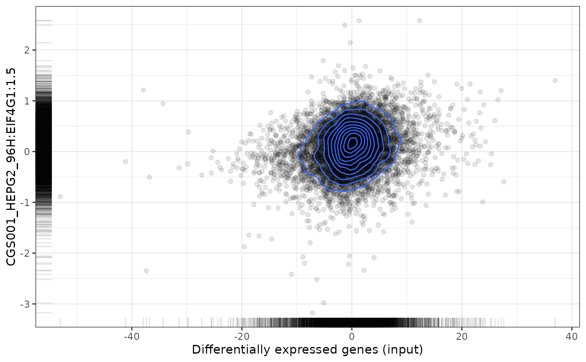
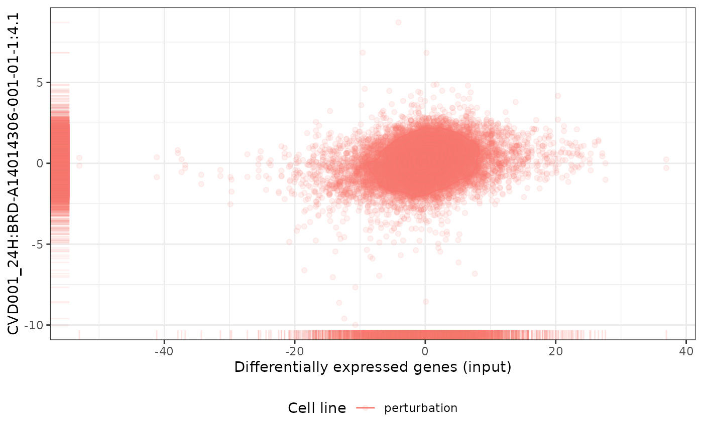
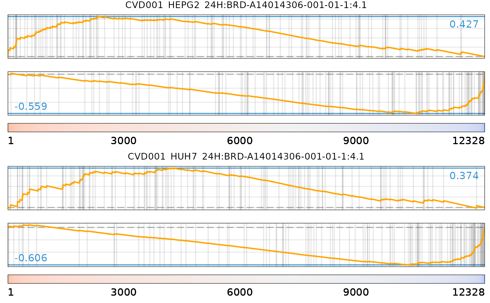
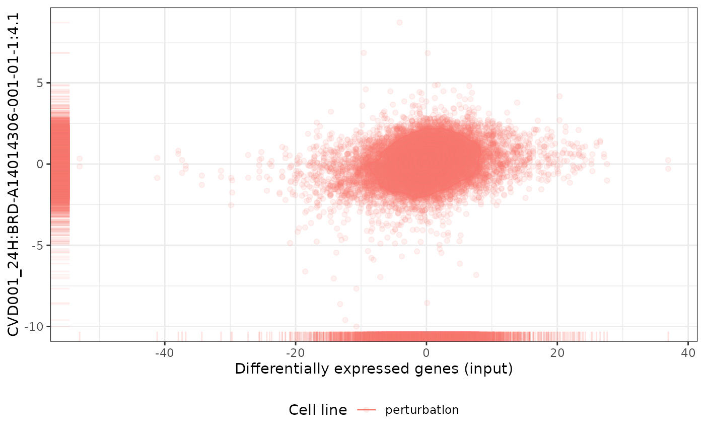
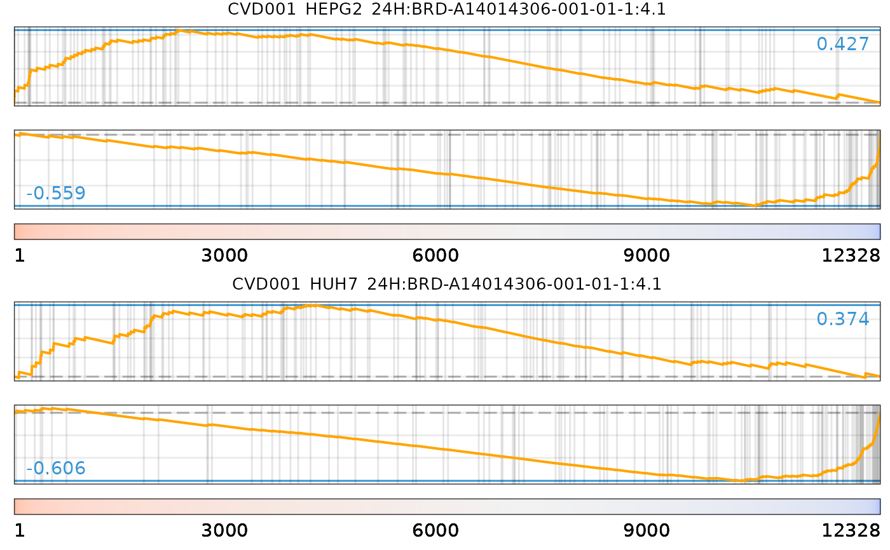

Operations on a perturbationChanges object
# S3 method for perturbationChanges
plot(
x,
perturbation,
input,
method = c("spearman", "pearson", "gsea"),
geneSize = 150,
genes = c("both", "top", "bottom"),
...,
title = NULL
)
# S3 method for perturbationChanges
[(x, i, j, drop = FALSE, ...)
# S3 method for perturbationChanges
dim(x)
# S3 method for perturbationChanges
dimnames(x)Arguments
- x
perturbationChangesobject- perturbation
Character (perturbation identifier) or a
similarPerturbationstable (from which the respective perturbation identifiers are retrieved)- input
Named numeric vectorof differentially expressed genes whose names are gene identifiers and respective values are a statistic that represents significance and magnitude of differentially expressed genes (e.g. t-statistics); orcharacterof gene symbols composing a gene set that is tested for enrichment in reference data (only used ifmethodincludesgsea)- method
Character: comparison method (
spearman,pearsonorgsea; multiple methods may be selected at once)- geneSize
Numeric: number of top up-/down-regulated genes to use as gene sets to test for enrichment in reference data; if a 2-length numeric vector, the first index is the number of top up-regulated genes and the second index is the number of down-regulated genes used to create gene sets; only used if
methodincludesgseaand ifinputis not a gene set- genes
Character: when plotting gene set enrichment analysis (GSEA), plot most up-regulated genes (
genes = "top"), most down-regulated genes (genes = "bottom") or both (genes = "both"); only used ifmethod = "gsea"andgeneset = NULL- ...
Extra arguments
- title
Character: plot title (if
NULL, the default title depends on the context; ignored when plotting multiple perturbations)- i, j
Character or numeric indexes specifying elements to extract
- drop
Boolean: coerce result to the lowest possible dimension?
Value
Subset, plot or return dimensions or names of a
perturbationChanges object
See also
Other functions related with the ranking of CMap perturbations:
as.table.referenceComparison(),
filterCMapMetadata(),
getCMapConditions(),
getCMapPerturbationTypes(),
loadCMapData(),
loadCMapZscores(),
parseCMapID(),
plot.referenceComparison(),
plotTargetingDrugsVSsimilarPerturbations(),
prepareCMapPerturbations(),
print.similarPerturbations(),
rankSimilarPerturbations()
Examples
data("diffExprStat")
data("cmapPerturbationsKD")
compareKD <- rankSimilarPerturbations(diffExprStat, cmapPerturbationsKD)
#> Subsetting data based on 8790 intersecting genes (65% of the 13451 input genes)...
#> Comparing against 26 comparisons (1 cell line) using 'spearman, pearson, gsea' (gene size of 150)...
#> Comparison performed in 0.68 secs
EIF4G1knockdown <- grep("EIF4G1", compareKD[[1]], value=TRUE)
plot(cmapPerturbationsKD, EIF4G1knockdown, diffExprStat, method="spearman")

plot(cmapPerturbationsKD, EIF4G1knockdown, diffExprStat, method="pearson")
 plot(cmapPerturbationsKD, EIF4G1knockdown, diffExprStat, method="gsea")
plot(cmapPerturbationsKD, EIF4G1knockdown, diffExprStat, method="gsea")
 data("cmapPerturbationsCompounds")
pert <- "CVD001_HEPG2_24H:BRD-A14014306-001-01-1:4.1"
plot(cmapPerturbationsCompounds, pert, diffExprStat, method="spearman")
plot(cmapPerturbationsCompounds, pert, diffExprStat, method="pearson")
data("cmapPerturbationsCompounds")
pert <- "CVD001_HEPG2_24H:BRD-A14014306-001-01-1:4.1"
plot(cmapPerturbationsCompounds, pert, diffExprStat, method="spearman")
plot(cmapPerturbationsCompounds, pert, diffExprStat, method="pearson")
 plot(cmapPerturbationsCompounds, pert, diffExprStat, method="gsea")
# Multiple cell line perturbations
pert <- "CVD001_24H:BRD-A14014306-001-01-1:4.1"
plot(cmapPerturbationsCompounds, pert, diffExprStat, method="spearman")
plot(cmapPerturbationsCompounds, pert, diffExprStat, method="gsea")
# Multiple cell line perturbations
pert <- "CVD001_24H:BRD-A14014306-001-01-1:4.1"
plot(cmapPerturbationsCompounds, pert, diffExprStat, method="spearman")
 plot(cmapPerturbationsCompounds, pert, diffExprStat, method="pearson")

plot(cmapPerturbationsCompounds, pert, diffExprStat, method="gsea")

plot(cmapPerturbationsCompounds, pert, diffExprStat, method="pearson")

plot(cmapPerturbationsCompounds, pert, diffExprStat, method="gsea")
